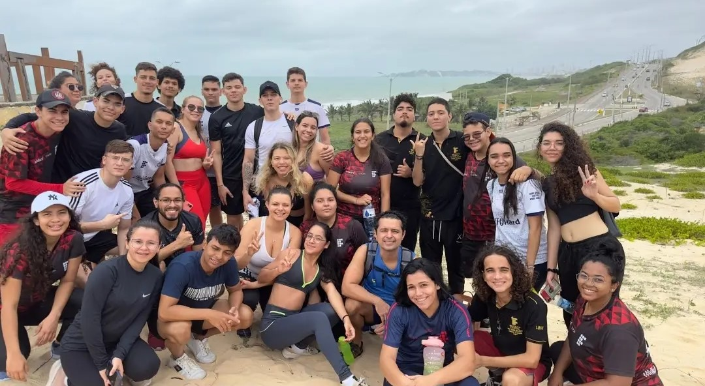
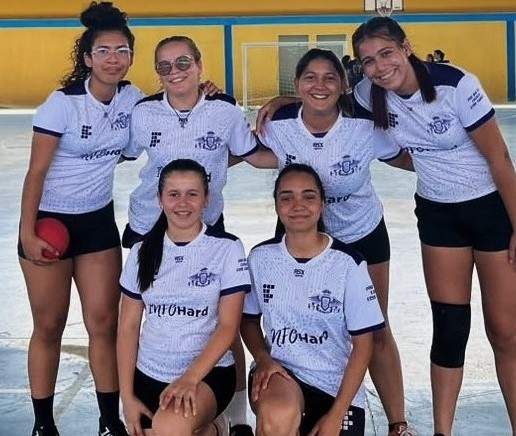
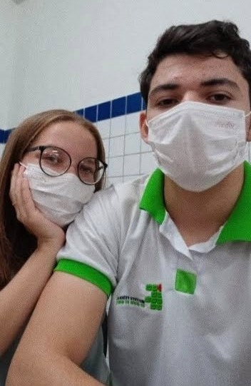

Aulas Interessantes
Tive a incrível oportunidade de participar de uma aula que fugiu completamente da nossa rotina acadêmica, mas que se revelou extraordinariamente interessante e enriquecedora. Essa experiência única aconteceu durante uma aula na trilha ecológica. Durante essa aula especial, pude explorar ecossistemas locais, observar flora e fauna nativas e compreender de forma prática os conceitos ecológicos.
Professores Dedicados

Tive a imensa sorte de contar com professores dedicados e experientes ao longo da minha jornada acadêmica no IFRN. Nesse contexto, gostaria de destacar a Professora Lucilene, que foi uma influência extraordinária na minha jornada de aprendizado. A dedicação e o compromisso da Professora Lucilene com o ensino da química eram verdadeiramente inspiradores. Ela não apenas dominava profundamente o assunto, mas também tinha a habilidade de tornar a química envolvente e acessível para todos os alunos.
Participação em Eventos
Além das aulas, tive a incrível oportunidade de participar ativamente em diversos eventos acadêmicos, culturais e esportivos promovidos pelo IFRN. Minha primeira participação na Semana Acadêmica (Semadec) foi, sem dúvida, um dos momentos mais marcantes da minha trajetória no IF. Foi uma experiência repleta de emoções e aprendizados. Nos eventos culturais, tive a honra de receber reconhecimento e prêmios nas modalidades de fotografia digital e poesia. Falar sobre poesia é falar sobre uma paixão que o IFRN despertou em mim. Aqui, em meio às salas de aula e ao convívio com pessoas inspiradoras, descobri o encanto das palavras e a magia de expressar sentimentos através da escrita.
Grandes amizades
Uma das minhas maiores dificuldades foi em relação a abrir-me com novas pessoas e permitir que elas se acomodassem em minha vida. De todas as pessoas importantes que passaram por mim nessa jornada, Vinícius foi, sem dúvida, uma das mais surpreendentes! Vinícius sempre foi alguém que se destacou pela sua autenticidade. Amizades como essas me fazem lembrar que a vida é muito mais rica quando a compartilhamos com amigos verdadeiros, aqueles que nos aceitam exatamente como somos.